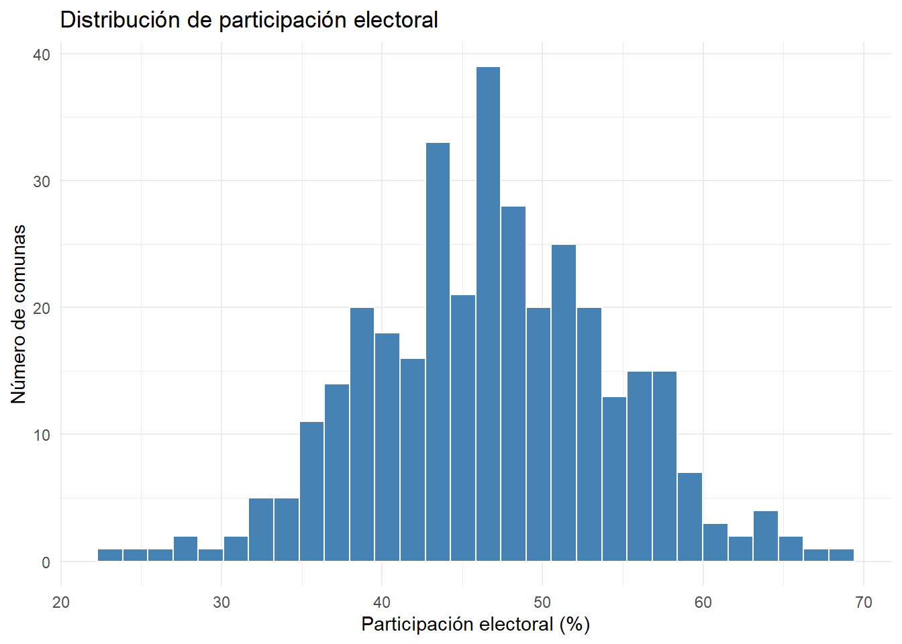
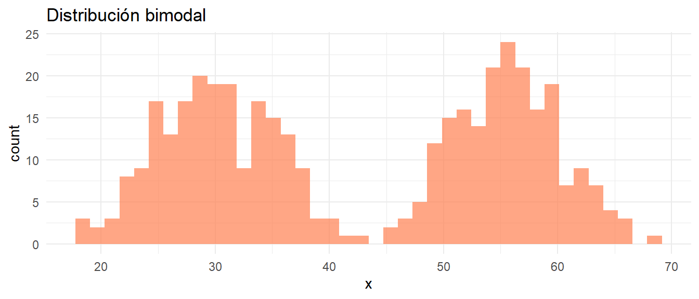
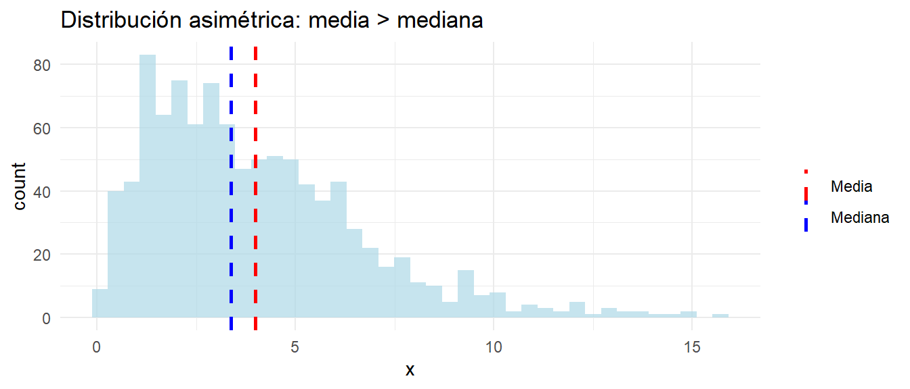
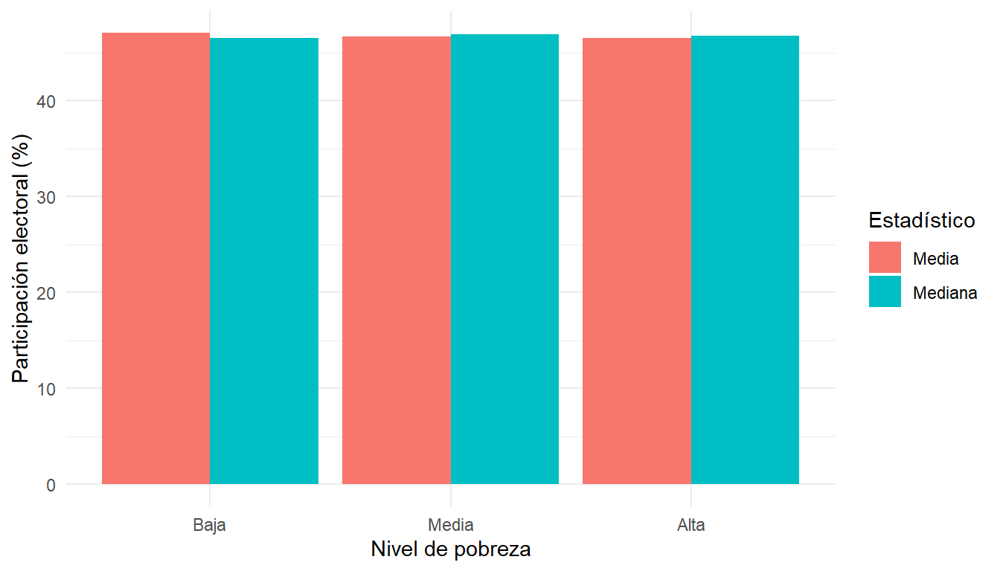

Última actualización: 7 de diciembre de 2024, 15:30 hrs.
Objetivos del capítulo
Al finalizar este capítulo, serás capaz de:
Calcular e interpretar medidas de tendencia central
Calcular e interpretar medidas de dispersión
Describir la forma de distribuciones
Identificar cuándo usar cada medida descriptiva
Generar gráficos exploratorios en R
Detectar valores atípicos mediante métodos gráficos y numéricos
5.1 Describiendo datos
Antes de calcular estadísticos, conviene visualizar cómo se distribuyen los datos. Una distribución de frecuencia muestra cuántas observaciones caen en cada valor o rango.
5.1.0.1 Tablas de frecuencia
Para variables categóricas, contamos casos en cada categoría:
Centro Derecha Izquierda Ninguna
24.875 28.750 29.750 16.625
Con tidyverse:
encuesta %>%count(orientacion) %>%mutate(porcentaje = n /sum(n) *100)
orientacion n porcentaje
1 Centro 199 24.875
2 Derecha 230 28.750
3 Izquierda 238 29.750
4 Ninguna 133 16.625
5.1.0.2 Histogramas
Para variables continuas, agrupamos en intervalos (bins):
ggplot(comunas, aes(x = participacion)) +geom_histogram(bins =30, fill ="steelblue", color ="white") +labs(x ="Participación electoral (%)", y ="Número de comunas",title ="Distribución de participación electoral") +theme_minimal()

Distribución de participación electoral en comunas
Muy pocos bins ocultan detalles; demasiados bins generan ruido. La regla de Sturges sugiere \(k = 1 + 3.322 \log(n)\) bins.
5.1.0.3 Medidas de tendencia central
Las medidas de tendencia central resumen la ubicación “típica” de los datos. La media (\(\bar{x} = \frac{1}{n}\sum_{i=1}^{n} x_i\)) es el promedio que usa toda la información pero es sensible a valores extremos, siendo apropiada para distribuciones simétricas.1 La mediana es el valor que divide la distribución en dos mitades iguales, es robusta a outliers, apropiada para distribuciones asimétricas, y tiene interpretación intuitiva. La moda es el valor más frecuente; para variables continuas tiene sentido solo con categorías o bins, siendo poco informativa sin agrupar pero útil para identificar multimodalidad.
1 En 2022, el ingreso promedio en Chile era aproximadamente $650,000, pero la mediana era aproximadamente $420,000. La diferencia ocurre porque pocos súper-ricos jalan la media hacia arriba. Por eso reportes de desigualdad siempre usan mediana, no media.
mean(comunas$participacion)
[1] 46.75662
median(comunas$participacion)
[1] 46.79276
# Ejemplo de sensibilidad a outliersingresos <-c(500, 550, 600, 650, 700, 750, 800, 5000)mean(ingresos) # La media se dispara por el valor extremo
[1] 1193.75
# Moda en variable categóricatabla <-table(encuesta$orientacion)names(tabla)[which.max(tabla)]
[1] "Izquierda"
# Simulamos distribución bimodal (dos grupos distintos)set.seed(456)bimodal <-c(rnorm(200, mean =30, sd =5),rnorm(200, mean =55, sd =5))ggplot(data.frame(x = bimodal), aes(x = x)) +geom_histogram(bins =40, fill ="coral", alpha =0.7) +labs(title ="Distribución bimodal") +theme_minimal()

Distribución bimodal
Regla general para elegir: distribuciones simétricas usa media porque usa toda la información; distribuciones asimétricas usa mediana porque es robusta a extremos;2variables ordinales usa mediana porque la media no tiene sentido para categorías ordenadas; variables nominales usa moda porque es la única medida con sentido.
2 Para saber si tu distribución es asimétrica: haz un histograma y observa si tiene “cola” larga a un lado, o compara media y mediana. Si media es mucho mayor que mediana, hay asimetría a la derecha. Variables que no pueden ser negativas frecuentemente son asimétricas a la derecha.
# Distribución asimétrica a la derechaset.seed(789)asimetrica <-rgamma(1000, shape =2, rate =0.5)media <-mean(asimetrica)mediana <-median(asimetrica)ggplot(data.frame(x = asimetrica), aes(x = x)) +geom_histogram(bins =40, fill ="lightblue", alpha =0.7) +geom_vline(aes(xintercept = media, color ="Media"), linewidth =1, linetype ="dashed") +geom_vline(aes(xintercept = mediana, color ="Mediana"), linewidth =1, linetype ="dashed") +scale_color_manual(values =c("Media"="red", "Mediana"="blue")) +labs(title ="Distribución asimétrica: media > mediana",color ="") +theme_minimal()

Media vs. mediana en distribución asimétrica
En distribuciones asimétricas a la derecha, la media excede la mediana (arrastrada por valores altos). En asimétricas a la izquierda, la media es menor que la mediana.
5.2 Medidas de dispersión
Las medidas de tendencia central resumen “dónde” están los datos. Las medidas de dispersión resumen cuánto varían.
5.2.0.1 Rango
El rango es la diferencia entre el máximo y el mínimo:
range(comunas$participacion)
[1] 23.05528 68.61513
diff(range(comunas$participacion))
[1] 45.55985
Simple pero sensible a outliers. Un solo valor extremo determina el rango.
5.2.0.2 Rango intercuartílico (IQR)
El IQR es la diferencia entre el tercer cuartil (Q3) y el primer cuartil (Q1). Captura el 50% central de los datos.
¿Por qué \(n-1\) y no \(n\)? La corrección de Bessel ajusta por usar la media muestral en lugar de la media poblacional. Esto hace que la varianza muestral sea un estimador insesgado de la varianza poblacional.
Problema: La varianza está en unidades al cuadrado (% al cuadrado), difícil de interpretar.
5.2.0.4 Desviación estándar
La desviación estándar (\(s\)) es la raíz cuadrada de la varianza:
\[s = \sqrt{s^2}\]
sd(comunas$participacion)
[1] 7.661361
Interpretación: En promedio, las comunas se desvían 7.7 puntos porcentuales de la participación media.
La desviación estándar está en las mismas unidades que los datos originales, facilitando interpretación.
5.2.0.5 Coeficiente de variación
El coeficiente de variación (CV) es la desviación estándar relativa a la media:
CV permite comparar variabilidad entre variables con diferentes escalas. Participación electoral (%) y años de educación tienen unidades incomparables, pero sus CVs son comparables.
# Comparar variabilidad de dos variablescv_participacion <-sd(comunas$participacion) /mean(comunas$participacion)cv_educacion <-sd(comunas$educ_superior) /mean(comunas$educ_superior)data.frame(Variable =c("Participación", "Educación superior"),CV =c(cv_participacion, cv_educacion)) %>%kable(digits =3)
resumen <- comunas %>%group_by(pobreza_cat) %>%summarise(Media =mean(participacion),Mediana =median(participacion) ) %>%pivot_longer(cols =c(Media, Mediana), names_to ="Estadistico", values_to ="Valor")ggplot(resumen, aes(x = pobreza_cat, y = Valor, fill = Estadistico)) +geom_col(position ="dodge") +labs(x ="Nivel de pobreza",y ="Participación electoral (%)",fill ="Estadístico") +theme_minimal()

Comparación de grupos
Resumen
La estadística descriptiva resume datos mediante medidas numéricas y gráficos. Las medidas de tendencia central (media, mediana, moda) capturan la ubicación típica. Para distribuciones simétricas, usar la media; para asimétricas, la mediana es más robusta.
Las medidas de dispersión (rango, IQR, varianza, desviación estándar) cuantifican variabilidad. La desviación estándar es la más usada por estar en unidades originales. El coeficiente de variación permite comparar dispersión entre variables con diferentes escalas.
Los percentiles y cuartiles dividen la distribución en partes iguales. El resumen de cinco números (mínimo, Q1, mediana, Q3, máximo) captura ubicación y dispersión, visualizado en boxplots.
La forma de la distribución se caracteriza por asimetría (skewness) y curtosis. Distribuciones asimétricas tienen colas desbalanceadas; la curtosis mide peso de las colas.
Los gráficos exploratorios (histogramas, boxplots, densidades, violin plots) revelan patrones que los estadísticos numéricos pueden ocultar. Los outliers requieren investigación—nunca eliminarlos automáticamente.
Para relaciones bivariadas, la covarianza mide asociación conjunta pero depende de escalas. La correlación de Pearson estandariza la covarianza y varía entre -1 y 1, midiendo asociación lineal.
La estadística descriptiva es exploratoria. Revela patrones, sugiere hipótesis, detecta problemas de datos. Pero no prueba nada—eso requiere inferencia estadística (Capítulos siguientes).
Lecturas recomendadas
Fundamentos de estadística descriptiva:
Agresti, A., & Finlay, B. (2018). Statistical Methods for the Social Sciences (5th ed.). Pearson.
→ Capítulos 2-4 cubren estadística descriptiva con ejemplos de ciencias sociales.
Visualización de datos:
Healy, K. (2018). Data Visualization: A Practical Introduction. Princeton University Press.
→ Principios de visualización efectiva con énfasis en ggplot2.
Estadística exploratoria:
Tukey, J. W. (1977). Exploratory Data Analysis. Addison-Wesley.
→ Clásico sobre análisis exploratorio y visualización.
Para profundizar en R:
Wickham, H., & Grolemund, G. (2017). R for Data Science. O’Reilly. [https://r4ds.had.co.nz/]
→ Capítulos 5 y 7 sobre transformación y análisis exploratorio.